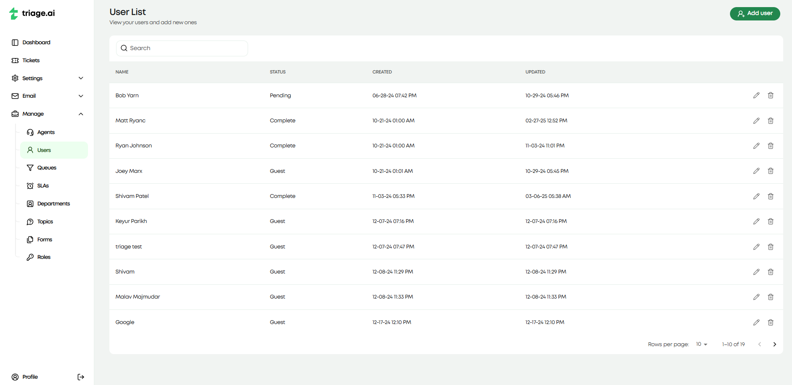
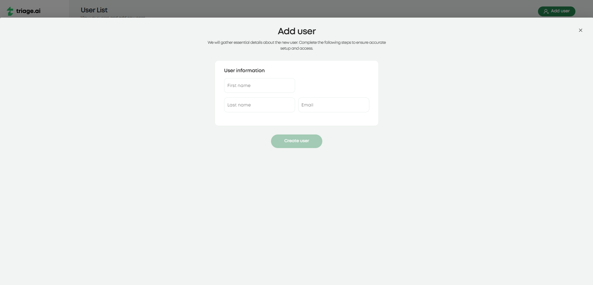
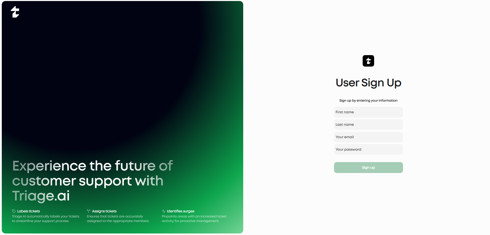
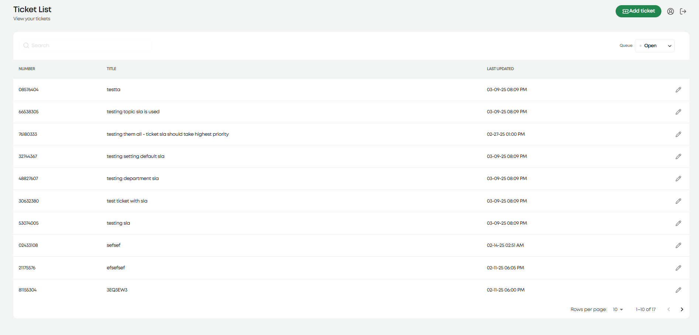
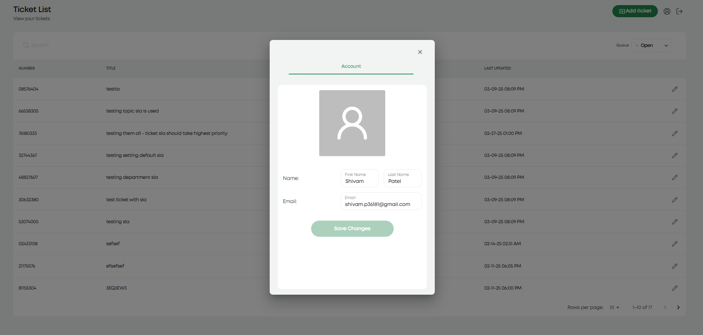

User Guide
triage.ai supports two end-user roles within the platform: users and guests. Users are individuals who have fully registered an account with triage.ai. Guests are individuals who have not finished the registration process or are only interacting with the system through email or the guest ticket page. Both roles have full access to creating support tickets. However, users will have complete visibility of all their tickets, and guests will need their ticket numbers to view individual tickets.
User Creation
Users can be created by agents or the user themselves on the login screen. If an agent has access to the user resource, they can create a user with basic personal information, but this user will only be a guest. This will let agents tag the user in tickets they make on their behalf. The user must visit the site and sign up to get the benefits of being a fully registered user. A guest account will also be created for customers whose tickets were created through email polling or customers who create tickets through the guest dashboard when they visit the site. In all of these situations, the guest user will receive an email directing them where to access their ticket and their ticket number so they can view their ticket. Pictured below are the agent user create screen and the user signup screen.
 A guest can fully register, or a customer can create an account from the login page. A signup option will then ask for basic information to create an account. A confirmation email with a link will be sent to ensure the email used is valid. Clicking on it will confirm the email address and let the user enter their password to finish the registration process. The user can then login and view all their tickets.
User Dashboard
Users will be greeted with the dashboard when they log in. This dashboard lists all tickets the user is tagged in, lets users create new tickets, and view their profile. There is not much for the user to change in their profile, but more customization will soon come. The ticket creation is straightforward for users; they can’t see any internal resources and can only select a topic and provide a title, description, and any additional information required by forms linked to the topic. The user will receive a confirmation that the ticket was made and see it along with any other tickets they are tagged in on the dashboard. The user can also edit the information they provided in the ticket (other than the topic) and communicate with the agent using the built-in thread explained in the Ticket Guide. The guest dashboard will be covered in the same guide that was just mentioned.
 